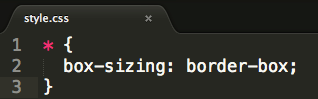
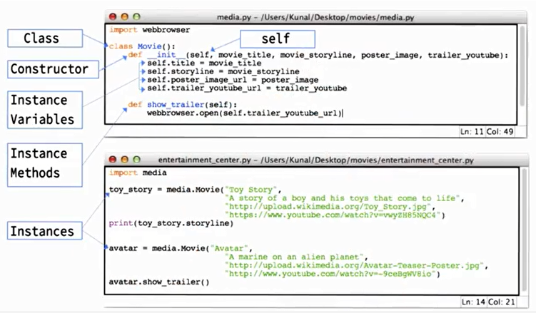
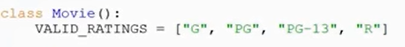
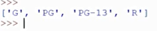

How the Web Works
The web is a bunch of computers that communicate with
each other. When a person goes to a web page like
www.google.com, their computer sends a
HTTP Request to
a server.
The server finds the appropriate HTML document and sends
it back to the user's computer where a
web browser interprets the page and displays it on
the user's screen.
This video
does a good job of explaining more.
HTML
HTML stands for Hypertext Markup
Language. HTML documents form the majority of the
content on the web.
HTML documents contain text
content which describes "what you see" and
markup which describes
"how it looks". This
video gives a good overview.
Hypertext is structured text that uses logical links (hyperlinks) between nodes containing text.
Tags and Elements
HTML documents are made of HTML
elements. When writing HTML, we
tell browsers the type of each element by using HTML
tags.
This video explains the
distinction well.
Computers are Dumb
Computers are stupid because they interpret
instructions literally. This makes them very
unforgiving since a small mistake by a
programmer can cause huge problems in a program.
Inline vs Block Elements
HTML elements are either inline
or block. Block elements form
an "invisible topic" around the content inside of them.
Developer Tools
Online HTML and CSS editor Codepen
The "tree-like structure" of HTML
The "tree-like structure" comes from the fact that HTML
elements can have other elements inside of them. You can
draw this relationship like a family tree. My mother
had multiple children. So did her mother, and so on...
In HTML structure is used when writing the writing the code for a web page. for example, within a single div element, opening and closing, you may have other elements such as a heading, H2, or a pragraph, p.
In a browser, this structure shows up as a series
of nested topices. There are topices inside of topices
inside of topices, and so on..
The relationship between indented HTML and topics
When you read an HTML document as
text, you see a wave of
changing indentations going up and down the left side
of the document. The more indented an element is, the
more deeply nested its corresponding "topic" is.
CSS Selectors
There are many types of
selectors,such as: ID Selector, Claas Selector, Tag Selector, Attribute Selector, Positional Selector, and Other Pseudo Selectors.
More information and details on the differnet selector types can be found here: CSS-Tricks.
CSS Properties
This CSS reference website is the best place to find standard CSS properties and how to use them.
This is a very valuable resource!
Text Editors (for programming)
When writing code, programmers use special text editors
(like Sublime Text for example). These editors make the
programmer's life easier. For example, some text editors
will automatically generate a closing HTML tag when you
write an opening tag.
Code Validation tools
To verify HTML
To verify CSS
CSS
(CSS) - Cascading Style Sheets are used alongside HTML code to simplify the styling and look of a web page.
CSS Styling
Inline and internal styling allows you to put the styling code side by side with standard HTML code. External style sheets are the preferred method and take advantage of efficiencies while coding.
To link an external style sheet use the following after the head tag:

Box Sizing
There are four main points that Jessica addressed about topic sizing.
1. HTML elements are topices and each topic has 4 components.
2. Because there are so many components to each topic, it can often be hard to get the size of a topic just right.
3. There are two techniques you can use to help deal with sizing issues.
a. Set sizes in terms of percent rather than pixels.
b. Set the topic-sizing attribute to border-topic for every element.

4. Different browsers work slightly differently. Sometimes this causes different browsers to display the same code differently.
A single Div will take up the entire width of a page
Box Positioning
1. Divs are block elements (as opposed to inline), so by default they take up the entire width of a page.
2. Adding the rule display: flex; to the appropriate CSS will override this behavior and let divs appear next to each other.
Coding Process
Code, Test, Refine
1. Look for natural topices
2. Look for repeated styles and semantic elements
3. Write your HTML
4. Apply styles
5. Fix things
Repeat steps 3 and 4 until your page looks like your design model.
Notes from Class
Class - the class key word allows us to make classes, you can think of a class as a blue print. A class can have both data and methods.
You can create multiple instances of a class. When you create an instance of a class, the class constructor gets called. This is essentially the (__init__) method within the class.
Constructors use the key word self (self or instance in question)
All of the variables associated with a specific instance are called instance variables; these are unique to an object and can accessed using the self keyword inside the class and the instance name outside the class.
All of the functions inside the class, that are associated with an instance, and have the first argument of self are called instance methods.

Interpretation
Python object: Class, Constructor, Instance Variables and Instance Methods
The Class is the highest level within the object and allows us to create and define multiple constructors.
Python program: Instance
When writing a new program Object oriented programming allows us to call out and Object and an associated class to perform a predefined function.
Stage 3 Terms
Object-oriented programming (OOP) languages such as Python allow programmers to build and define functions, classes and variables within a separate Object, or also known as a Module. A Module allow for easy logical organization of Python code.
During the movie website project we created our own Module and pre-defined classes and variables to enable the program. We also used a the fresh_tomatoes.py module to dynamically create the HTML and CSS code needed to display our movie website.
Classes are a way of packaging variables and functions together for reuse.
Classes allow you to create new python programs that may use an instance to call out the instance variables within the predefined class.
Variables
Instance variables are defined inside a method and belongs only to the current instance of a class.
Class variables are shared by all instances of a class. Class variables are defined within a class but outside any of the class's methods. Class variables aren't used as frequently as instance variables are.
We use the class variable when we have variables that we want all of our instances to share. The example in the movie website was movie rating (e.g. G, PG, PG-13, and R). This list of ratings can be used by all movies; unique values are not needed here.
it is defined at the level of the class and is outside the init function. When the values are constant it is best practice to use all caps in the variable name.
Example:
(1) Define the variable:

(2) Call out the object file (media), the Class (Movie) and the class variable (VALID_RATINGS):
(3) The print output should mirror the define variables

Inheritance: The transfer of the characteristics of a class to other classes that are derived from it.
Library:Python library of built in functions
Constructor:__init__ is a constructor, which is reserved in python code, and is used to create space to store a value.